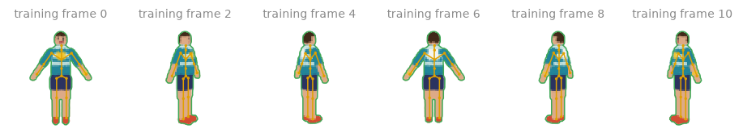
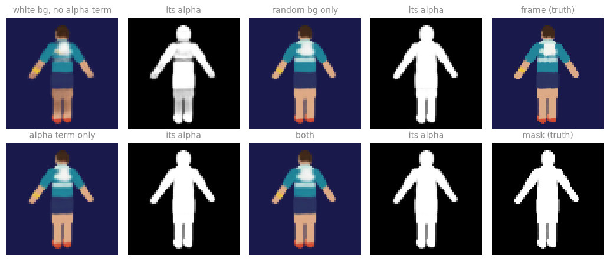
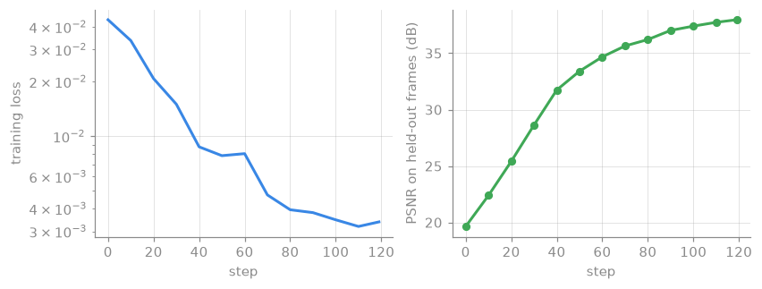
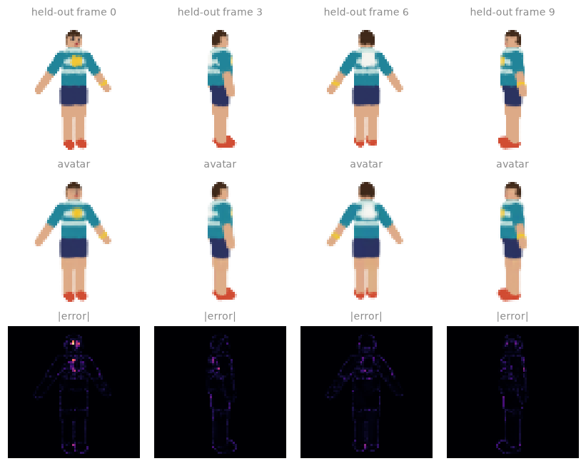
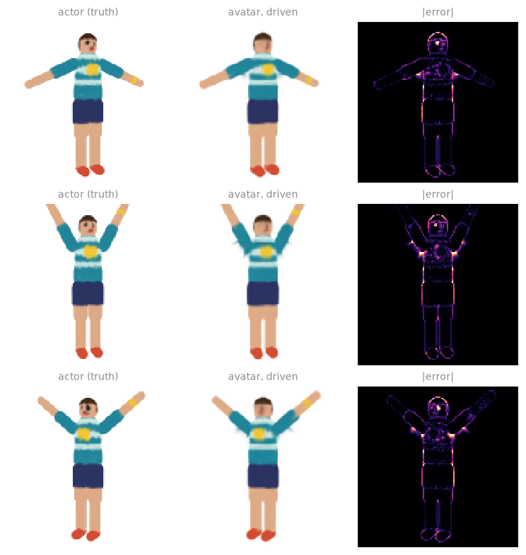
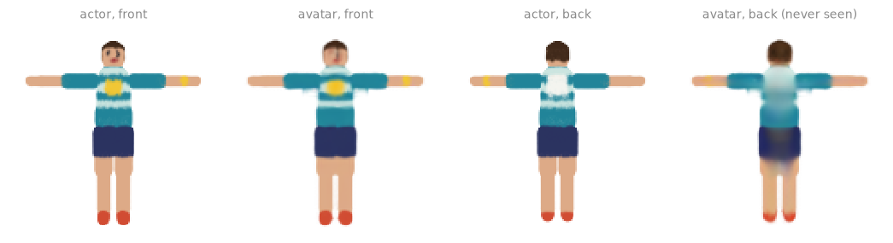
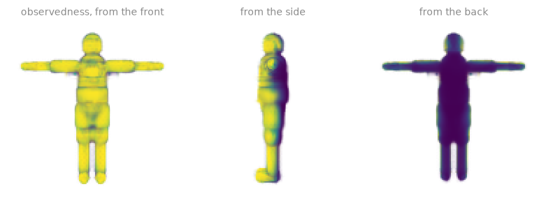
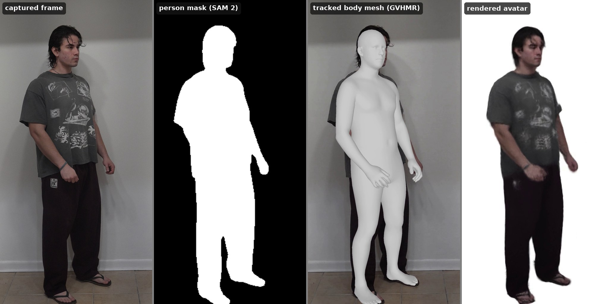

Fitting an avatar to one video#
What you will learn
The monocular setup: one fixed camera, a person who turns, a mask and a pose for every frame.
The fitting loss, one term at a time: the photometric term, the alpha-against-mask term and the random background, and what breaks without them.
How to judge a fit: frames held out of training, and motions the avatar never saw.
What happens on surfaces the video never showed.
Prerequisites: Lesson 2c (gradients through the renderer) and Lesson 4a (the shell avatar).
1. One camera, and a person who turns#
To reconstruct a 3D object you need to see it from many directions. A capture studio does this with many cameras. A person with one phone on a tripod can do it too: stand in front of the camera and turn slowly in place. For a rigid object the two are the same thing. Turning the object by an angle \(\theta\) in front of a fixed camera gives the same picture as leaving the object alone and moving the camera around it by \(-\theta\).
actor = cu.ToyActor()
poses, trans = cu.motion("turn", 24) # arms lowered, one full turn about the vertical axis
fixed = cu.orbit_camera(0, size=64)
t = 5
theta = math.degrees(float(poses[t, 0, 1])) # the root joint's rotation about y in this frame
turned, _ = actor.render(fixed, poses[t], trans[t]) # the person turned, camera fixed
still_pose, still_trans = cu.a_pose(1)
orbited, _ = actor.render(cu.orbit_camera(-theta, size=64), still_pose[0], still_trans[0]) # person still, camera moved
diff = float((turned - orbited).abs().max())
print(f"frame {t}: the person turned by {theta:.0f} degrees; largest pixel difference to the orbiting camera: {diff:.1e}")
assert diff < 1e-3
frame 5: the person turned by 75 degrees; largest pixel difference to the orbiting camera: 8.1e-06
A turn in place is an orbit in disguise. The disguise slips for a real person, who is not rigid: the arms sway, the clothes shift, and the body is not in exactly the same pose in every frame. So a real pipeline cannot treat the frames as views of one rigid object. It needs the pose of the body in every frame, and that is why the avatar is built on a skeleton.
cu.make_video produces what a capture and its preprocessing would deliver:
Per frame |
Toy |
Real capture |
|---|---|---|
colour image |
rendered actor |
a video frame |
mask of the person |
the renderer’s alpha |
a segmentation network |
body pose |
the true pose |
a pose tracker’s estimate |
2D keypoints |
projected joints |
a keypoint detector |
The toy poses are exact. That is the largest difference from reality in this lesson, and Lesson 5b is about what happens when they are not.
video = cu.make_video(actor, poses, trans, cam=fixed)
train = video.subset(range(0, 24, 2)) # even frames: used for fitting
held_out = video.subset(range(1, 24, 2)) # odd frames: only ever used for scoring
print(f"{len(video)} frames -> {len(train)} for training, {len(held_out)} held out")
fig, axes = plt.subplots(1, 6, figsize=(10.5, 2.0))
for ax, t in zip(axes, (0, 2, 4, 6, 8, 10)):
ax.imshow(cu.to_np(train.frame(t)))
ax.contour(cu.to_np(train.mask[t]), levels=[0.5], colors=[cu.COLORS["truth"]], linewidths=1.0)
cu.draw_skeleton(ax, train.keypoints[t], lw=1.0, joint_size=5)
ax.set_title(f"training frame {t}", fontsize=9); ax.set_axis_off()
24 frames -> 12 for training, 12 held out

Green is the outline of the mask and yellow is the skeleton projected into the image. The held-out frames lie between the training frames, so they show the body from directions the fit has not seen exactly. Holding out frames is the least you can do to check that the avatar is a 3D object and not a set of memorised pictures. Part 8 explains why this split is still an easy test.
2. The loss, one term at a time#
The avatar is a function. Given a texture \(T\), a pose \(\theta_t\) and a camera, it renders a colour image \(\hat I_t\) and an alpha image \(\hat\alpha_t\) (how much of each pixel the Gaussians cover). Fitting means choosing \(T\) so that the renders match the frames. Three ingredients define “match”.
The photometric term. Compare colours pixel by pixel with an L1 distance:
L1 is used instead of a squared error because it does not let a few badly wrong pixels dominate, which keeps edges sharper.
The background. A render needs a background colour \(b\) behind the Gaussians, and the frame needs the same one: \(I_t = F_t + (1 - m_t)\, b\), where \(F_t\) is the foreground colour (already multiplied by the mask \(m_t\)). The fit draws a new random \(b\) at every step.
The alpha term. Compare the rendered alpha with the mask directly:
Here is the whole fit, written out. It is what cu.fit does.
def fit_inline(avatar, video, iters=120, lr=0.05, batch=2, seed=0, w_alpha=0.5, random_bg=True, probe=None):
g = cu.generator(seed)
opt = torch.optim.Adam(avatar.parameters(), lr=lr)
log = {"step": [], "loss": [], "probe": []}
for step in range(iters):
loss = 0.0
for t in cu.randint(0, len(video), (batch,), generator=g).tolist(): # a few random frames
bg = cu.rand(3, generator=g) if random_bg else torch.ones(3) # background colour b
img, alpha = avatar.render(video.cams[t], video.poses[t], video.trans[t], bg=bg)
target = cu.composite_on(video.rgb[t], video.mask[t], bg) # the frame over the same b
loss = loss + (img - target).abs().mean() + w_alpha * (alpha - video.mask[t]).abs().mean()
loss = loss / batch
opt.zero_grad(); loss.backward(); opt.step()
if step % 10 == 0 or step == iters - 1:
log["step"].append(step); log["loss"].append(float(loss.detach()))
log["probe"].append(probe(avatar) if probe else None)
return log
a, b = cu.ShellAvatar(density=300.0, offsets=(0.0, 0.03)), cu.ShellAvatar(density=300.0, offsets=(0.0, 0.03))
fit_inline(a, train, iters=4)
cu.fit(b, train, iters=4)
same = float((a.texture - b.texture).detach().abs().max())
print(f"largest texture difference between this loop and cu.fit after 4 steps: {same:.1e}")
assert same < 1e-5
largest texture difference between this loop and cu.fit after 4 steps: 3.0e-08
The optimiser is Adam [Kingma and Ba, 2015]. It suits this problem because the gradients of different texels differ by orders of magnitude: a texel on the chest is seen in most frames, one under the arm in almost none. Adam rescales each parameter’s step by the size of its own recent gradients.
2.1 What goes wrong with a white background and no alpha term#
The simplest fit would composite everything over white and use only the photometric term. We run it, together with each fix alone and with both. To keep this section short the four fits use a light avatar with two shells. Each fit is scored on the held-out frames twice: over white, and over a dark blue background that no fit was trained on.
dark = (0.10, 0.10, 0.30)
variants = {"white background, no alpha term": dict(random_bg=False, w_alpha=0.0),
"random background only": dict(random_bg=True, w_alpha=0.0),
"alpha term only": dict(random_bg=False, w_alpha=0.5),
"both (the default)": dict(random_bg=True, w_alpha=0.5)}
table, shown = {}, []
for name, kw in variants.items():
model = cu.ShellAvatar(offsets=(0.0, 0.03))
cu.fit(model, train, iters=100, **kw)
on_white = cu.evaluate(model, held_out)["mean_psnr"]
on_dark = cu.evaluate(model, held_out, bg=dark)["mean_psnr"]
imgs, alphas = cu.render_video(model, held_out, bg=dark)
inside = float(alphas[held_out.mask > 0.95].mean()) # rendered alpha where the person certainly is
table[name] = (on_white, on_dark, inside)
shown += [imgs[6], alphas[6]]
print(f"{name:32s}: over white {on_white:5.2f} dB | over dark blue {on_dark:5.2f} dB | alpha inside the body {inside:.3f}")
cu.show_images(shown[:4] + [held_out.frame(6, bg=dark)] + shown[4:] + [held_out.mask[6]],
["white bg, no alpha term", "its alpha", "random bg only", "its alpha", "frame (truth)",
"alpha term only", "its alpha", "both", "its alpha", "mask (truth)"], ncols=5, size=1.9, cmap="gray", vmax=1);
naive, both = table["white background, no alpha term"], table["both (the default)"]
assert naive[1] < naive[0] - 3.0, "the naive fit should look much worse on a new background"
assert naive[2] < both[2] - 0.02 and abs(both[1] - both[0]) < 2.5
white background, no alpha term : over white 33.30 dB | over dark blue 26.56 dB | alpha inside the body 0.924
random background only : over white 35.01 dB | over dark blue 36.15 dB | alpha inside the body 0.989
alpha term only : over white 35.05 dB | over dark blue 35.87 dB | alpha inside the body 0.992
both (the default) : over white 35.11 dB | over dark blue 36.13 dB | alpha inside the body 0.992

Over white, the naive fit looks nearly as good as the others. Over dark blue it loses several decibels, and its alpha image shows why: there are holes in the body. The actor has a white print on the back of the shirt and pale stripes. A pixel that should be white can be explained by an opaque white Gaussian or by no Gaussian at all, with the white background showing through. The photometric loss cannot tell the two apart, so the fit has no reason to prefer the solid answer. The avatar looks right only in front of the background it was trained on.
Either fix removes the ambiguity on this toy:
With a random background, a transparent pixel shows a different colour at every step, so it cannot match a white print. The model is forced to make it opaque.
The alpha term says directly that the pixel is covered.
The two fixes are not redundant on real footage. The random background also works where the mask is unreliable, since it acts through the colour. The alpha term also pins down the outline, which the colour of a blurred edge pixel only constrains weakly, and it gives the fit a signal that does not depend on colour at all. Lesson 5b uses that property.
One more lesson hides in this table: the white-background score did not reveal the holes. A metric computed over the training background is blind to exactly this failure. Score over a background the model never trained on, or over two different ones.
3. The fit, watched from the held-out frames#
Now the full avatar: four shells, about 9,000 Gaussians. While it trains we score it on a few held-out frames.
avatar = cu.ShellAvatar()
probe_set = held_out.subset([0, 3, 6, 9])
t0 = time.perf_counter()
log = fit_inline(avatar, train, iters=120, probe=lambda m: cu.evaluate(m, probe_set)["mean_psnr"])
seconds = time.perf_counter() - t0
fig, (a0, a1) = plt.subplots(1, 2, figsize=(8.6, 3.0))
a0.plot(log["step"], log["loss"], color=cu.COLORS["gaussian"]); a0.set_yscale("log")
a0.set_xlabel("step"); a0.set_ylabel("training loss")
a1.plot(log["step"], log["probe"], color=cu.COLORS["truth"], marker="o")
a1.set_xlabel("step"); a1.set_ylabel("PSNR on held-out frames (dB)")
ev_train, ev_held = cu.evaluate(avatar, train), cu.evaluate(avatar, held_out)
print(f"{avatar.n_gaussians} Gaussians, 120 steps in {seconds:.0f} s (including the scoring)")
print(f"training frames {ev_train['mean_psnr']:.2f} dB | held-out frames {ev_held['mean_psnr']:.2f} dB | "
f"held-out silhouette IoU {ev_held['mean_iou']:.3f}")
assert ev_held["mean_psnr"] > 30.0 and ev_held["mean_psnr"] > log["probe"][0] + 10.0
9308 Gaussians, 120 steps in 3 s (including the scoring)
training frames 40.08 dB | held-out frames 37.33 dB | held-out silhouette IoU 0.989

The loss falls quickly and then crawls. The first dozen steps make the body opaque and give each part its average colour; the rest of the fit sharpens the stripes and the edges. The held-out score follows the training score a little below it. The gap is small because a held-out frame lies between two training frames only fifteen degrees to either side.
with torch.no_grad():
renders, _ = cu.render_video(avatar, held_out)
picks = (0, 3, 6, 9)
cu.show_images([held_out.frame(t) for t in picks] + [renders[t] for t in picks] +
[(renders[t] - held_out.frame(t)).abs().mean(-1) for t in picks],
[f"held-out frame {t}" for t in picks] + ["avatar"] * 4 + ["|error|"] * 4, ncols=4, size=1.9, vmax=0.4);

The error that remains sits on outlines and on the borders between colours, where a one-pixel difference in position costs the most.
4. Driving the avatar with motion it never saw#
A held-out frame of the same turn is a new view. It is not a new pose: the arms are where they were in every training frame. The purpose of the avatar is to be driven, so the real test is a different motion. We render the fitted avatar and the true actor in two motions from the library, and compare.
drive = {}
for name in ("dance", "arms_up"):
p, tr = cu.motion(name, 12)
truth_video = cu.make_video(actor, p, tr, cam=fixed)
drive[name] = (truth_video, cu.evaluate(avatar, truth_video))
print(f"{name:8s}: {drive[name][1]['mean_psnr']:.2f} dB whole frame, {drive[name][1]['mean_psnr_fg']:.2f} dB inside the mask")
print(f"held-out frames of the turn: {ev_held['mean_psnr']:.2f} dB whole frame, {ev_held['mean_psnr_fg']:.2f} dB inside the mask")
assert all(d[1]["mean_psnr"] > 26.0 for d in drive.values())
assert drive["arms_up"][1]["mean_psnr_fg"] < ev_held["mean_psnr_fg"]
big = cu.orbit_camera(0, size=128)
p, tr = cu.motion("arms_up", 12)
shown = []
for t in (2, 5, 8):
with torch.no_grad():
a_img = avatar.render(big, p[t], tr[t])[0]
t_img = actor.render(big, p[t], tr[t])[0]
shown += [t_img, a_img, (a_img - t_img).abs().mean(-1)]
cu.show_images(shown, ["actor (truth)", "avatar, driven", "|error|"] * 3, ncols=3, size=2.3, vmax=0.4);
dance : 33.40 dB whole frame, 28.49 dB inside the mask
arms_up : 33.59 dB whole frame, 28.49 dB inside the mask
held-out frames of the turn: 37.33 dB whole frame, 30.95 dB inside the mask

The avatar follows the new motion, and the face, logo and stripes stay where they belong. The score is lower than on the held-out turn frames, and the error maps show where: around the armpits and shoulders, and along the sides of the torso. In the training video the arms hung beside the body in every frame, so the camera saw those surfaces poorly, and raising the arms exposes them. The next section isolates this effect and then measures it.
5. Coverage: what the camera never saw#
Suppose the person does not complete the turn. We fit a second avatar to a video that only swings from −70° to +70°, so that the camera never sees the back.
front_poses, front_trans = cu.a_pose(12)
front_poses[:, 0, 1] = torch.deg2rad(torch.linspace(-70, 70, 12))
front_video = cu.make_video(actor, front_poses, front_trans, cam=fixed)
partial = cu.ShellAvatar()
texture_before = partial.texture.detach().clone()
cu.fit(partial, front_video, iters=120)
front_cam, back_cam = cu.orbit_camera(0, size=128), cu.orbit_camera(180, size=128)
with torch.no_grad():
views = {k: (partial.render(c)[0], actor.render(c)[0]) for k, c in (("front", front_cam), ("back", back_cam))}
score = {k: cu.psnr(*v) for k, v in views.items()}
print(f"front view {score['front']:.1f} dB | back view {score['back']:.1f} dB")
cu.show_images([views["front"][1], views["front"][0], views["back"][1], views["back"][0]],
["actor, front", "avatar, front", "actor, back", "avatar, back (never seen)"], size=2.4);
assert score["back"] < score["front"] - 2.0
front view 30.7 dB | back view 25.6 dB

The front is right. The back is a plausible-looking guess that is wrong: the white print is missing, and the shorts are smeared with grey. Where did the guess come from, if no frame showed the back? Measure how much each Gaussian contributes to the training images. The contribution of Gaussian \(i\) to a pixel is its blending weight \(w_i = \alpha_i \prod_{j<i} (1 - \alpha_j)\) from Lesson 2a, and its sum over all pixels and frames is the observedness of the Gaussian. The gradient of a rendered image with respect to a Gaussian’s colour is exactly that sum, so autograd computes it for us.
def observedness(model, video):
"""Sum over frames and pixels of each Gaussian's blending weight. Colour is not read."""
total = torch.zeros(model.n_gaussians)
for t in range(len(video)):
means, cov, colors, opacity = (x.detach() for x in model.gaussians(video.poses[t], video.trans[t]))
colors.requires_grad_(True)
img, _ = cu.render(means, cov, colors, opacity, video.cams[t], bg=(0.0, 0.0, 0.0))
img[..., 0].sum().backward() # d(sum of red) / d(red of Gaussian i) = sum of its weights
total += colors.grad[:, 0]
return total
torso = (partial.part == cu.part_index("chest")) | (partial.part == cu.part_index("abdomen"))
facing_back = torso & (partial.rest_frame[:, 2, 2] < -0.7) # rest-pose normal points away from the front
facing_front = torso & (partial.rest_frame[:, 2, 2] > 0.7)
obs_after = observedness(partial, front_video)
fresh = cu.ShellAvatar()
obs_start = observedness(fresh, front_video)
ratio = lambda o: float(o[facing_back].mean() / o[facing_front].mean())
print(f"observedness of back-facing torso Gaussians, relative to front-facing ones: "
f"{ratio(obs_start):.2f} before the fit, {ratio(obs_after):.4f} after it")
changed = float((partial.texture.detach() - texture_before).abs().amax(2)[:, [cu.part_index('chest')]].gt(0.05).float().mean())
print(f"share of chest texels that moved away from their initial value: {changed:.2f}")
assert ratio(obs_after) < 0.03 and ratio(obs_start) > 3 * ratio(obs_after) and changed > 0.8
observedness of back-facing torso Gaussians, relative to front-facing ones: 0.05 before the fit, 0.0065 after it
share of chest texels that moved away from their initial value: 1.00
After the fit, the back-facing Gaussians contribute almost nothing to any training image: the front of the body is opaque and hides them. Yet nearly every texel of the chest has moved away from its initial value, including the ones on the back. Two things explain it. First, the back is not perfectly hidden early on. An untrained avatar is partly transparent, so a little of the camera’s view passes through the body, and the back of the shirt receives a faint gradient from pixels that show the front; the first number above measures that leak. Second, Adam divides every parameter’s step by the typical size of its own gradient. A texel with a faint gradient therefore moves about as fast as a texel with a strong one. The faint, wrong signal is enough to paint the back with a faded copy of the front. Once the front is opaque the signal stops, and the back keeps whatever it had at that moment. It looks plausible, and it is wrong.

Yellow Gaussians were seen well by the training video and dark ones hardly at all. The whole back is dark.
The same measure explains the error maps of Section 4. For the avatar fitted to the full turn, compare the undersides of the upper arms with their tops, and the sides of the torso with its front and back.
obs_full = observedness(avatar, train)
normal = avatar.rest_frame[:, :, 2] # rest-pose normals; in the rest pose the arms point sideways
arms = (avatar.part == cu.part_index("l_upperarm")) | (avatar.part == cu.part_index("r_upperarm"))
torso = (avatar.part == cu.part_index("chest")) | (avatar.part == cu.part_index("abdomen"))
mean = lambda m: float(obs_full[m].mean())
under, top = mean(arms & (normal[:, 1] < -0.7)), mean(arms & (normal[:, 1] > 0.7))
side, front_back = mean(torso & (normal[:, 0].abs() > 0.8)), mean(torso & (normal[:, 2].abs() > 0.8))
print(f"observedness, underside of the upper arms / top: {under / top:.2f}")
print(f"observedness, sides of the torso / front and back: {side / front_back:.2f}")
assert under < 0.75 * top and side < 0.9 * front_back
observedness, underside of the upper arms / top: 0.39
observedness, sides of the torso / front and back: 0.60
With the arms lowered, the undersides of the arms and the sides of the torso face each other. They are not invisible in a full turn, but they are seen through a narrow gap and in fewer frames, so they are fitted with less evidence than the chest or the back.
Nothing in the fit can fix this, because the information is not in the video. There are two remedies, and both are outside the optimiser. The first is to capture what is missing: turn all the way around, and hold a pose with the arms away from the body. The second is to fill poorly observed texels from well observed neighbours in texture space, which at least replaces an arbitrary leftover with the colour of the surrounding cloth or skin. The real pipeline does the second after every fit, with exactly this observedness measure.
From the real system#

What the fit starts from. One training frame from the slow turn in the author’s capture, with the two inputs the fit needs besides the pixels: the person mask (SAM 2) and the tracked body (GVHMR). The last panel is the fitted avatar rendered in that frame’s pose and camera. In the toy lessons the poses were known exactly; here they come from a tracker and are only roughly right.
Tracking over time. Eight seconds of the same training take: the captured frames and the body mesh GVHMR tracked for them. Notice that the mesh follows the motion closely but does not sit exactly on the person, and that its hands and face barely move. This is why the pipeline corrects the pose per frame from silhouettes and keypoints, and why hands and faces get their own trackers in the hi-fi track.
The fit, replayed over the turn. Every frame the standard track kept from the turn clip (most of them training frames), captured on the left and rendered on the right in the same pose and camera. Notice what a single shared appearance can and cannot do: the shirt print and the silhouette follow the capture, while folds and shading that change from frame to frame are averaged out.
Training progression (renders at increasing iterations) is not shown: the real runs keep only their final checkpoints.
In the real pipeline#
Step |
Toy |
Real pipeline |
|---|---|---|
Capture |
a rendered turn |
a slow turn in place plus free movement, from a phone or camera (docs/CAPTURE_GUIDE.md) |
Masks |
exact |
SAM 2 [Ravi et al., 2025] ( |
Poses |
exact |
GVHMR [Shen et al., 2024] seeds, then silhouette and keypoint tracking ( |
Fit |
|
|
Unseen surfaces |
left as they are |
|
The real loss has the same three ingredients, with a structural-similarity term [Wang et al., 2004] mixed into the photometric part. Its history is close to Section 2.1. The project’s first fits used a constant grey background and scored on grey, and a review found that “the grey-background PSNR is blind to grey splats”: every Gaussian starts grey, so the metric hid them. Scoring was changed to the mean over black and white backgrounds, and training with a random background per iteration then scored about 2 dB higher than training on constant grey (26.14 against 23.96 dB at the end of training; RESULTS.md).
The inpainting tool measures observedness the way Section 5 does, as each Gaussian’s accumulated colour contribution over the training frames, maps it to texels through the bilinear lookup, and recolours the texels that fall below a fraction of the median. It reads no colour from any frame. The surfaces it exists for are the ones Section 5 measured as poorly observed: inner arms against the torso, and armpits.
Summary#
A person turning in front of one fixed camera gives the views an orbiting camera would, as far as the body is rigid. Because it is not, every frame needs a pose.
The fit is gradient descent on the texture. The loss is an L1 colour difference plus an L1 difference between rendered alpha and the mask, over a background colour drawn at random at each step.
With one fixed background and no alpha term, the model can explain a pixel of the background’s colour by a hole. The picture looks right on that background only. A random background or the alpha term removes the ambiguity, and a score computed over the training background does not reveal it.
Judge a fit on frames it did not train on, and then on poses it did not train on. New poses expose surfaces that the training video never showed.
Unseen texels are not left untouched: they keep whatever faint, leaked gradients painted into them early on. The fit cannot repair that; a better capture or a fill from neighbouring texels can.
Exercises#
Run the main fit with
batch=1and withbatch=4for the same number of steps. How do the time and the held-out PSNR change? What would you expect at equal time?Replace the L1 photometric term in
fit_inlinewith a squared error. Compare the held-out PSNR and look at the stripes on the shirt.Fill the unseen texels of
partial. Mapobs_afterto texels (differentiate(partial.sample_texture(probe)[:, 0] * obs_after).sum()with respect to a zeroprobetexture), mark texels below 2 % of the median, and replace their colour channels by the average of their known neighbours, repeatedly, wrapping in \(u\). Does the back view improve? Why is the gain so limited on this toy?
Solution 1
for batch in (1, 2, 4):
m = cu.ShellAvatar(); t0 = time.perf_counter()
fit_inline(m, train, iters=120, batch=batch)
print(batch, round(time.perf_counter() - t0), "s", round(cu.evaluate(m, held_out)["mean_psnr"], 2), "dB")
Time grows in proportion to the batch, because every frame is one render and one backward pass. At equal steps a larger batch is a little better, since each step averages the gradient over more views. At equal time the small batch usually wins on this problem: Adam’s running averages already smooth the gradient over steps.
Solution 3
probe = torch.zeros_like(partial.texture, requires_grad=True)
(partial.sample_texture(probe)[:, 0] * obs_after).sum().backward()
count = torch.zeros_like(partial.texture, requires_grad=True)
partial.sample_texture(count)[:, 0].sum().backward()
per_texel = probe.grad[:, :, 0] / count.grad[:, :, 0].clamp(min=1e-6)
unknown = per_texel < 0.02 * per_texel[count.grad[:, :, 0] > 0].median()
tex = partial.texture.detach().clone()
known = (~unknown).float()
val = tex[:, :, 0:3] * known[:, :, None]
def neighbours(x):
up = torch.cat([x[..., 1:, :], x[..., -1:, :]], -2); down = torch.cat([x[..., :1, :], x[..., :-1, :]], -2)
return torch.roll(x, 1, -1) + torch.roll(x, -1, -1) + up + down
for _ in range(40):
s, w = neighbours(val), neighbours(known)
new = (known == 0) & (w > 0)
val = torch.where(new[:, :, None], s / w.clamp(min=1e-6)[:, :, None], val)
known = torch.where(new, torch.ones_like(known), known)
tex[:, :, 0:3] = torch.where(unknown[:, :, None], val, tex[:, :, 0:3])
print(cu.psnr(partial.render(back_cam, texture=tex)[0].detach(), actor.render(back_cam)[0]))
The back view changes very little. The fill replaces colours with those of the nearest observed cloth, and the faint leaked gradients had already put similar colours there. No fill can invent the white print, which no frame showed. On real footage the gain is larger, because unseen texels there keep a grey initial colour that shows as streaks when a new pose exposes them.
References#
[Kingma and Ba, 2015] for the optimiser.
[Alldieck et al., 2018] for the turn-in-place capture as a way to reconstruct a person from one camera.
[Ravi et al., 2025] and [Shen et al., 2024] for the masks and pose seeds of the real pipeline; [Wang et al., 2004] for the structural-similarity term.
Project documentation: README, Method and RESULTS.md.